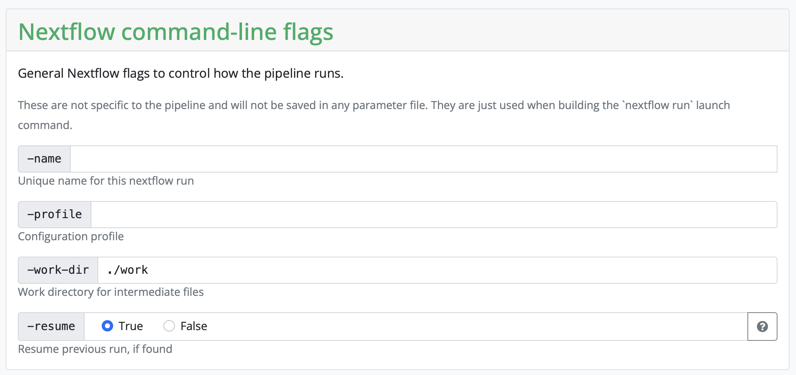
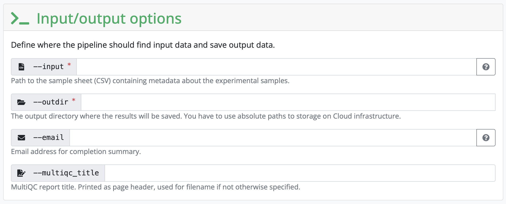
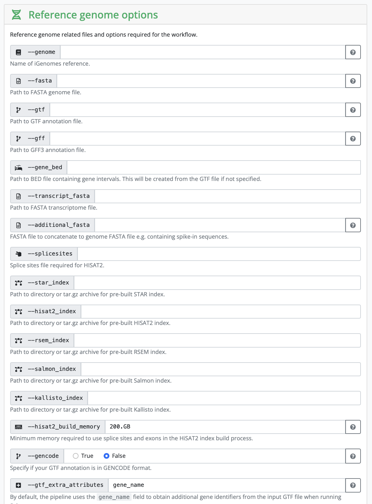
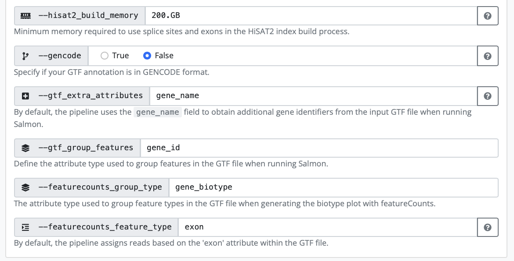
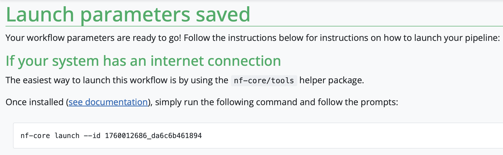

Now that we have tested nextflow and nf-core, we want to use the pipeline in our own data.
1. Pixi environment
First, we need to make a new directory for the analysis. What dependencies do we need for Nextflow and nf-core? Our pixi.toml file should look like this:
[workspace]
channels = ["conda-forge", "bioconda"]
name = "nf-core_RNAseq"
platforms = ["linux-64"]
version = "0.1.0"
[tasks]
[dependencies]
nf-core = ">=3.3.2,<4"
nextflow = ">=25.4.8,<26"2. Link your data into the directory
Make a subdirectory, data, change into it and create a symlink to the data:
Use:
ln -s SOURCE TARGETSince you are in the directory data the TARGET is simply . .
Change back to the parent directory.
3. nf-core launch
The nf-core platform helps you set up the pipleines with the nf-core launcher. In order to use it, you have to go to the nf-core webpage of the pipleine you are interested in. In this case, we are going to use the nf-core/rnaseq, following this link you have to click on the button launch version 3.19.0(it could be a different one in the future). We are then redirected to a page where we can fill in all of our information about input files, as well as selecting or deselecting certain parts of the pipeline.
Setting working and results directories
During the first part, you need to set a working and result directory. If you are using a server that has a profile established, you can put the name of the server there. In our case, we will use the server configuration file locally.
Set resume to True, otherwise you don’t need to change anything here. 
Next, the pipeline asks for the input CSV. Exact requirements for how that input file should look like can be found under the tab Usage on the pipeline homepage. This input CSV is unique to each analysis. The input CSV (samplesheet.csv) we need for this pipeline looks like this:
sample,fastq_1,fastq_2,strandedness
SRR5223504, /proj/nobackup/medbioinfo2025/lara_leal/nf-core_test_course/nf-core_RNAseq/data/SRR5223504_1.fastq.gz, /proj/nobackup/medbioinfo2025/lara_leal/nf-core_test_course/nf-core_RNAseq/data/SRR5223504_2.fastq.gz, auto
SRR5223517, /proj/nobackup/medbioinfo2025/lara_leal/nf-core_test_course/nf-core_RNAseq/data/SRR5223517_1.fastq.gz, /proj/nobackup/medbioinfo2025/lara_leal/nf-core_test_course/nf-core_RNAseq/data/SRR5223517_2.fastq.gz, auto
Set the outdir to the name and path to a directory you want the output to be saved to.
Setting all other inputs that are required
In this section, you set variables that are related to your reference genome. If you are using something listed on iGenomes, you can input that name. If you are working with your own reference genome, or something not listed, you need to input the absolute path of the reference genomes you have downloaded.  
Depending on your strategy, you might need to input a corresponding gff as well. It really depends on the kind of analysis you are hoping to perform.
In our case, we have human samples, so in theory we can use the iGenomes reference. However, the transcriptome and GTF files in iGenomes are out of date, so nf-core recommends downloading and using the more up-to-date version. In order to do so we are going to follow these instructions. We are going to create a reference folder in our directory that is going to contain the downloaded genome and a download.shfile with the following information:
#!/bin/bash -l
#SBATCH -A hpc2n2025-203
#SBATCH -t 10:00
#SBATCH -n 1
VERSION=108
wget -L ftp://ftp.ensembl.org/pub/release-$VERSION/fasta/homo_sapiens/dna/Homo_sapiens.GRCh38.dna_sm.primary_assembly.fa.gz
wget -L ftp://ftp.ensembl.org/pub/release-$VERSION/gtf/homo_sapiens/Homo_sapiens.GRCh38.$VERSION.gtf.gzGetting your JSON file
Once everything is filled in, click on Launch and you will be redirected to another page containing your JSON file that has information on your run.
Copy the JSON file a bit lower on the screen and saving it as nf-params.json in your folder on HPC2N.
Add the save_reference line as recommended by nf-core (because we are using their downloaded human genome). 
Configuration profile
As before, you need the HPC2N configuration file, with the correct project ID.
Add your e-mail under email and you will receive a message with a summary of the run.
4. Starting the run
The launcher gives us the command to run the pipeline:
nextflow run nf-core/rnaseq -r 3.19.0 -resume -params-file nf-params.jsonWe need to change this slightly, to add that we are running it via Pixi, and to add the server specific configuration file:
Submit directly via pixi
Now you can run the pipeline with the following command (you might have to change it a bit to add pathways to files that are not in your current working directory):
pixi run nextflow run nf-core/rnaseq -r 3.19.0 -resume -params-file nf-params.json -c hpc2n.configThere are several layers to this command:
First we invoke Pixi and tell it to run the following commands.
Then we say which program we want to run, namely Nextflow.
The following commands are Nextflow/ nf-core commands:
- we want to run the nf-core/rnaseq pipeline, version 3.19.0
- we want to use the parameter file called nf-params.json
- we want to use the hpc configuration file called hpc2n.config
Submit via sbatch
Alternatively, you can run nextflow via pixi using a batch script and slurm: copy the following text to file called name_submit_rnaseq.sh where name is your name.
#!/bin/bash -l
#SBATCH -A our_proj_allocation
#SBATCH -n 5
#SBATCH -t 24:00:00
/your_home_directory/.pixi/bin/pixi run nextflow run nf-core/rnaseq -r 3.19.0 -params-file /your_path/nf-params.json -c server.configAnd then submit it to slurm with:
sbatch name_submit_rnaseq.shYou can check the progress of your job with squeue -u your_username
And now we wait until the run is done!